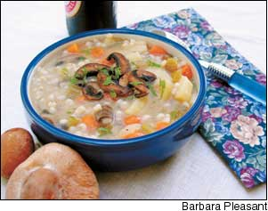
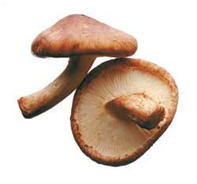

Issue #206 - October/November 2004
Sauté with onions and peppers as savory fillings for omelets or meat, crisp into crunchy bits for salad toppings, or stew with barley into nourishing broths. Anyway you prepare them, mushrooms make delicate morsels, indeed.
How people ever figured out that mushrooms could be enjoyed at the table is amazing considering poisonous species far outnumber delectable edibles. But they did. Egyptian hieroglyphics depict mushrooms as food reserved for kings, and Roman philosopher Seneca called them “voluptuous poison.” By the Middle Ages, Europeans adopted the German word, todesstuhl, for “death’s stool,” to generally refer to mushrooms, all of which they thought too untrustworthy to eat.
But in China, Japan and, later, France, food lovers revisited that issue when they learned how to cultivate mushrooms on logs and stumps, and in caves, where cool temperatures made year-round mushroom production possible.
Today, mushrooms figure prominently in most of the world’s cuisines; in North America, for example, per capita consumption has steadily grown to almost 4 pounds per year. Mushrooms such as portobellos, crimini (baby portobellos) and shiitake have become more available, and more popular, in recent years, too.
Many enjoy raw mushrooms in fresh salads, and cultivated raw mushrooms won’t hurt you, but it is better nutritionally to eat them cooked. The cooking process breaks down a substance in mushroom cell walls called chitin, and is a necessary step to unlocking the nutrients and other beneficial compounds. Also, some edible wild mushrooms contain small amounts of toxins, which may be reduced or eliminated in cooking, but no amount of cooking will make a poisonous mushroom safe to eat.
Fortunately, edible mushrooms are widely available and can be prepared in many delicious ways, although veteran mushroom growers often say simplest is best: Just clean, slice and braise the mushrooms in a hot pan in olive oil and, sometimes, thinly sliced garlic, with salt and pepper to taste.
There’s magic in this method, too. In the first few minutes of cooking, mushrooms give off moisture. As this liquid evaporates, the mushrooms begin to brown slightly, and with a few more minutes of cooking, they take on the chewy, savory flavor preferred by connoisseurs. Shiitake and portobellos have more dry matter (fiber) than the common white button mushrooms, so they become quite meaty when braised, and portobellos are a favorite for the grill. Whether braised in a pan or on the grill, mushrooms cooked until they are toasty brown make fantastic “croutons” to add to salads - provided you can restrain yourself from eating them all straight from the pan.
Of course, you can capture those flavorful juices given off by mushrooms by using them in stocks or adding them to soups and stews. To make sure the liquid is mushroom juice and not just water, never submerge mushrooms when cleaning them because they take up water too readily. Many cooks clean them just by wiping the surface with a damp towel or gently running cool water over the tops. If you opt for the cool water method, avoid wetting the gills, which are edible, although they usually are removed from large portobellos because of their dark- chocolate color. When preparing portobellos for stuffing or grilling, a grapefruit spoon makes a great tool for scraping out the colored gills.
Knowledgeable cooks keep a supply of dry mushrooms handy, as well as fresh ones. Asian markets often offer several dried varieties, or should you locate a good supply of fresh shiitake, it’s easy to dry them yourself in a slow oven. Thoroughly dried mushrooms store well in a cool, dark place for many months. When you’re ready to use them, just soak the mushrooms for 15 minutes in hot water; they will continue to rehydrate as they are cooked.
Any type of mushroom can be used in the following ways:
• sautéed with caramelized onions and then pureed into a pâté
• combined with spinach in quiches or quesadillas
• braised in oil, then folded into an omelet or layered onto hot toast
• included in Asian stir-fries.
Good flavor ac cents from your garden or spice shelf include thyme, tarragon, basil, sage, a sprinkling of grated orange peel or a light spritz of lemon juice.
Mushrooms also go nicely with almost all vegetables, from asparagus to zucchini, though some of the best pairings include eggplant, green beans and tomatoes. One of my favorite concoctions is sautéed onions, garlic, peppers and mushrooms, with tomatoes added at the end of the cooking time; this is served over hot polenta and topped with parmesan cheese.
Grains from arborio (risotto) rice to nutty quinoa pair well with mushrooms, too, and barley seems lost without them. Recipes for barley pilafs, casseroles, soups and stews invariably include mushrooms, and we can credit resourceful Germans for creating delicious mushroom and barley soup (recipe below).
Traditional cream of mushroom soup, a French invention, also is delectable, and can be lightened substantially by using half-and-half in place of cream. Should you find yourself with a bumper supply of turkey stock, try braising some mushrooms with an equal measure of shallots before swirling them into the stock and adding a splash of sherry. Add a plate of crusty bread or a nutty pumpkin muffin, and dinner is served.
This hearty winter soup becomes a satisfying meal with the addition of whole grain bread or muffins. Serves 4.
2 tablespoons olive oil
8 ounces crimini (baby portobello) mushrooms, stemmed and sliced
3 ½ ounces shiitake mushrooms,
stemmed and sliced
1 large onion, coarsely chopped
¾ cup chopped celery (2 stalks)
½ cup fine barley
4 cups vegetable, chicken or turkey stock or bouillon
1 cup sliced carrots (about 2)
2 cups potatoes, peeled and diced
into ½-inch pieces (2 medium)
½ teaspoon salt
¼ teaspoon freshly ground pepper
1 teaspoon fresh thyme,
or ½ teaspoon dried
2 tablespoons chopped fresh parsley
In a large cooking pot, heat 1 tablespoon of the olive oil over medium heat. Add half the mushrooms and braise until nicely browned, about 5 minutes. Remove the mushrooms from the pan and set them aside. Heat the remaining olive oil, and sauté the onions until they begin to brown. Add the celery and barley, and cook another 2 minutes. Add the remaining ingredients except for the herbs, bring the mixture to a boil and cook for 20 minutes, or until the potatoes are tender. Add the thyme and 1 tablespoon parsley, and cook 5 more minutes. Garnish each bowl with reserved braised mushrooms and parsley.
|
 |
 |
|